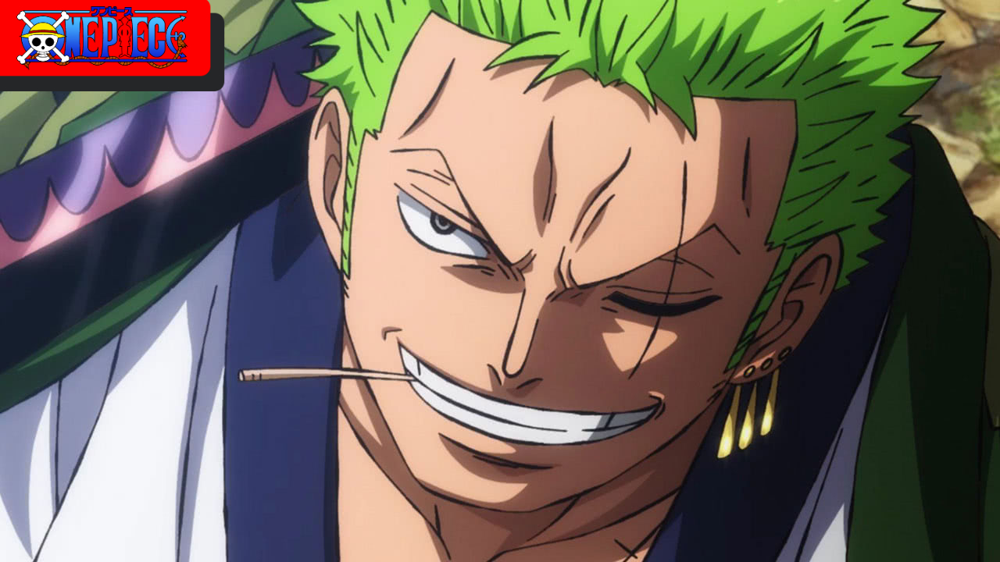

Personagens One Piece

Monkey D. Luffy,também conhecido como Luffy Chapéu de Palha ou Chapéu de Palha,é um pirata e o protagonista do anime e mangá One Piece. Ele é o fundador e o capitão do cada vez mais infame e poderoso Piratas do Chapéu de Palha, bem como um de seus principais lutadores.
Monkey D Luffy
Tony Tony Chopper é uma rena. Ele é o médico da tripulação dos Piratas do Chapéu de Palha. Chopper é uma rena que, após comer a Hito Hito no Mi, adquiriu a habilidade de se transformar e raciocinar como os humanos.
Tony Tony Chopper

Roronoa Zoro, também conhecido como "Caçador de Piratas" Zoro, é o combatente dos Piratas do Chapéu de Palha e um ex-caçador de recompensas.
Roronoa Zoro
Os piratas do Chapeu de Palha
Historia do anime
O mundo de One Piece é povoado por humanos e muitas outras raças, como anões, homens-peixe e gigantes. É coberto por dois vastos oceanos, que são divididos por uma enorme cordilheira chamada Red Line; A Grand Line, um mar que corre perpendicularmente à Red Line, divide-os em quatro mares: North Blue, East Blue, West Blue e South Blue. Ao redor da Grand Line, estão duas regiões chamadas Calm Belts, semelhantes às latitudes dos cavalos, que quase não experimentam ventos ou correntes oceânicas e são o terreno fértil para enormes criaturas marinhas chamadas reis-dos-mares.
A série foca em Monkey D. Luffy, um jovem feito de borracha, que, inspirado em seu ídolo de infância, o poderoso pirata Shanks, o Ruivo, parte em uma jornada do mar do East Blue para encontrar o tesouro mítico, o One Piece, e proclamar-se o Rei dos Piratas.
Os piratas do Chapeu de Palha
O mundo de One Piece é povoado por humanos e muitas outras raças, como anões, homens-peixe e gigantes. É coberto por dois vastos oceanos, que são divididos por uma enorme cordilheira chamada Red Line; A Grand Line, um mar que corre perpendicularmente à Red Line, divide-os em quatro mares: North Blue, East Blue, West Blue e South Blue. Ao redor da Grand Line, estão duas regiões chamadas Calm Belts, semelhantes às latitudes dos cavalos, que quase não experimentam ventos ou correntes oceânicas e são o terreno fértil para enormes criaturas marinhas chamadas reis-dos-mares.
A série foca em Monkey D. Luffy, um jovem feito de borracha, que, inspirado em seu ídolo de infância, o poderoso pirata Shanks, o Ruivo, parte em uma jornada do mar do East Blue para encontrar o tesouro mítico, o One Piece, e proclamar-se o Rei dos Piratas.